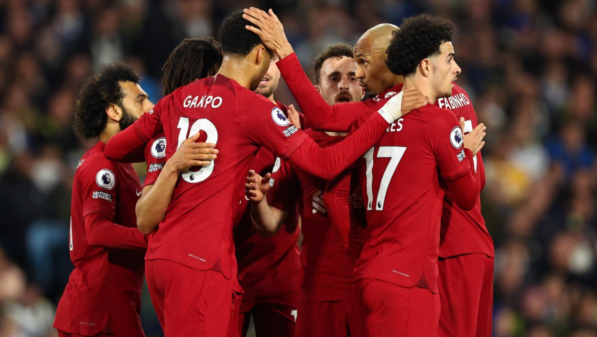

Liverpool Football Club to angielski klub piłkarski z siedzibą w Liverpoolu.
Został założony 131 lat temu - 15 marca 1984 roku. Od czasu powstania swoje mecze domowe gra na Anfield.
Jest bardzo utytułowanym klubem w Anglii - 19 krotnie zostawał mistrzem Angli, 8 krotnie zdobywal Puchar Angli
i 9 krotnie Puchar Ligi Angielskiej. Ponadto w Europejskich pucharach 6 krotnie wygrywał Lige Mistrzów.
